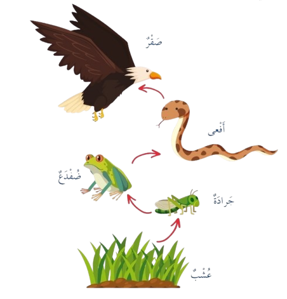
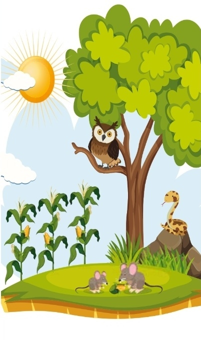

الفصل الأول
الوحدة الثالثة: أماكن عيش الكائنات الحية
الفصل الثاني
الدرس الثاني: السلسلة الغذائية
ما السلسلة الغذائية؟
ترتبط الكائنات الحية بعلاقات غذائية، تمثل مع بعضها ما نسميه Food Chain السلسلة الغذائية.
فمثلا، الجرادة تأكل العشب، والضفدع يأكل الجرادة، والأفعى تأكل الضفدع، والصقر يأكل الأفعى.
تبدأ السلسلة الغذائية غالبا بالنباتات وهي كائنات حية تصنع غذاءها بنفسها، ثم الحيوانات آكلات العشب، ثم الحيوانات آكلات اللحوم.

⁉️ سؤال: حسب الصورة، ما الترتيب الصحيح للسلسلة الغذائية؟

الإجابة: تبدأ السلسلة الغذائية في الصورة بالشمس، ثم نبات الذرة، فالفأر، فالأفعى، وتنتهي بالبومة.